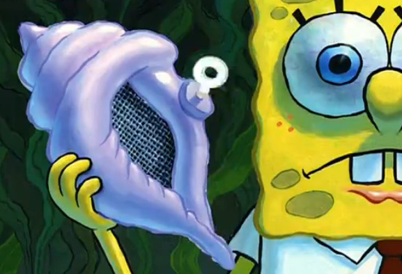

Lab 15 - AJAX

Challenge
Experimenting with jQuery and AJAX
Problems
We didn't run into any siginificant problems
Reflection
AJAX feels like a step up from jQuery in terms of the installation and potential usage.
The only problem we can see for it is if the url link we use becomes faulty but the same
can be said for most libraries that are installed via URL. We'll make sure that any future APIs
we use are popular and supported!
Results
Ask a question to the magic conch shell and press the button below